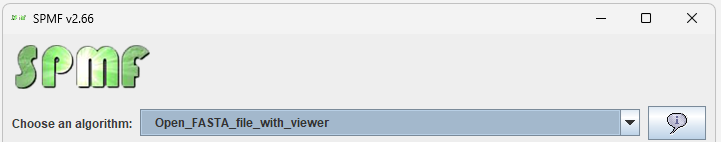
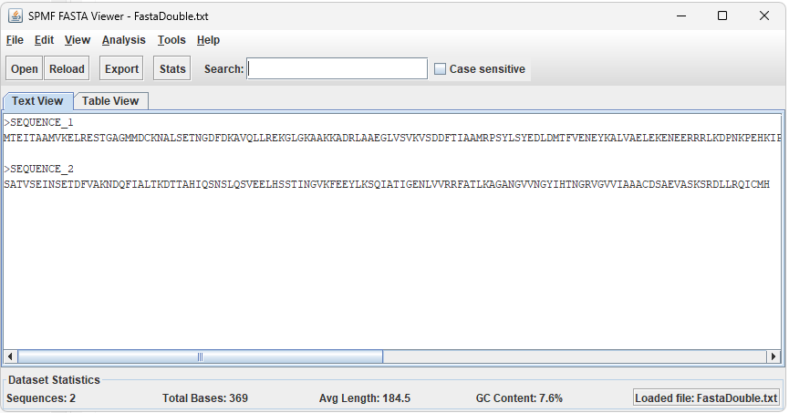

View the content of a FASTA file using the FASTA Viewer (SPMF documentation)
SPMF provides a FASTA Viewer Tool to view the content of a FASTA file from the graphical user interface of SPMF. The viewer supports files with the extensions .fasta, .fa, .fna, and .ffn.
This webpage explains how to use this tool with an example.
How to run this example?
If you want to run this example from the graphical interface of SPMF, (1) choose the "Open_FASTA_file_with_viewer" algorithm, (2) choose the FastaDouble.fasta file as input, and then (3) click "run algorithm".

- If you want to run this example from the source code of SPMF, run the file MainTestFastaViewer, which is located in the package ca.pfv.spmf.gui.viewers.fastaviewer.
-
If you want to execute this example from the command line
interface of SPMF, then execute this command:
java -jar spmf.jar run Open_FASTA_file_with_viewer FastaDouble.fasta
in a folder containing spmf.jar and the file FastaDouble.fasta, which is included with SPMF.
What is a FASTA file?
The FASTA format is a widely used text-based format for representing nucleotide or peptide sequences in bioinformatics. Each entry in a FASTA file consists of:
- A header line beginning with the
>character, followed by a sequence identifier and an optional description. - One or more lines of sequence data (nucleotides or amino acids).
- Lines beginning with
;are treated as comments and are ignored.
Example of a FASTA file:
>SEQUENCE_1
MTEITAAMVKELRESTGAGMMDCKNALSETNGDFDKAVQLLREKGLGKAAKKADRLAAEG
LVSVKVSDDFTIAAMRPSYLSYEDLDMTFVENEYKALVAELEKENEERRRLKDPNKPEHK
IPQFASRKQLSDAILKEAEEKIKEELKAQGKPEKIWDNIIPGKMNSFIADNSQLDSKLTLAAAACGAAAACG
MGQFYVMDDKKTVEQVIAEKEKEFGGKIKIVEFICFEVGEGLEKKTEDFAAEVAAQL
>SEQUENCE_2
SATVSEINSETDFVAKNDQFIALTKDTTAHIQSNSLQSVEELHSSTINGVKFEEYLKSQI
ATIGENLVVRRFATLKAGANGVVNGYIHTNGRVGVVIAAACDSAEVASKSRDLLRQICMH
What will be displayed?
After running the example, the FASTA Viewer window will open and display the content of the file. The viewer offers two complementary views:
- Text View – displays the raw FASTA content with the header and sequence for each entry, useful for inspecting the exact content of the file.
- Table View – displays each sequence as a row in a sortable table, showing the sequence number, header, length, GC content percentage, and a preview of the sequence. Double-clicking a row opens a detailed view of that sequence.

Features of the FASTA Viewer
Viewing and Navigation
- Switch between Text View and Table View using the tabs at the top of the main panel.
- The statistics bar at the bottom of the window shows the total number of sequences, total base count, average sequence length, and overall GC content.
- Click any column header in Table View to sort sequences by that column.
- Double-click any row in Table View to open a Sequence Details dialog showing the full sequence, per-nucleotide counts, and GC/AT content.
Search and Filter
- Type in the Search field in the toolbar to filter sequences in real time. In Text View, matching entries are highlighted; in Table View, non-matching rows are hidden.
- Enable the Case sensitive checkbox for case-sensitive matching.
- Press ESC to clear the search field.
Export
- Use File → Export… to save all sequences to a new FASTA file.
- Use File → Export Selected… to save only the sequences selected in Table View.
- Use Edit → Copy Selected (or Ctrl+C) to copy selected sequences to the clipboard in FASTA format.
Analysis Tools
- Analysis → Show Detailed Statistics – opens a tabbed dialog with general statistics, nucleotide composition, and a length distribution table.
- Analysis → Nucleotide Composition – shows a table and colour bar chart of nucleotide frequencies across all sequences.
- Analysis → GC Content Analysis – shows per-sequence GC percentages and a histogram of GC content distribution.
- Analysis → Length Distribution – shows a bucketed table and histogram of sequence lengths.
Bioinformatics Tools
- Tools → Count Codons – counts all tri-nucleotide codons across the dataset (with optional degeneracy grouping) and writes results to a file.
- Tools → Count K-mers – counts all k-mers of a user-specified length and writes results to a file.
- Tools → Count Top-K K-mers – counts all k-mers and reports only the most frequent ones.
- Tools → Reverse Complement – computes the reverse complement of all sequences and allows copying or exporting the results.
- Tools → Translate to Protein – translates all sequences using the standard genetic code (reading frame +1) and allows copying or exporting the protein sequences.
- Tools → Filter by Length… – keeps only sequences within a user-specified length range and exports them.
- Tools → Find ORFs – searches all six reading frames for Open Reading Frames (ORFs) above a minimum length and displays results in a sortable table that can be exported.
Above is a description of version 1.0 of the FASTA Viewer included in SPMF. More features may be added in future versions.